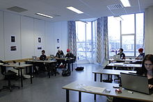
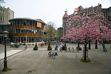
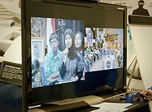

La educación es la institución social que permite y promueve la adquisición de habilidades, conocimientos y la ampliación de horizontes personales y que puede tener lugar en muchos entornos
Es el proceso de facilitar el aprendizaje o la adquisición de Conocimientoasí como habilidades,valores , creencias y hábitos . El proceso educativo se da a través de la investigación, el debate, la narración de cuentos, la discusión, la enseñanza, el ejemplo y la formación en general. La educación no solo se produce a través de la palabra, pues además está presente en todas nuestras acciones, sentimientos y actitudes. Generalmente, la educación se lleva a cabo bajo la dirección de las figuras de autoridad: los padres, los educadores ( profesores o maestros), 34 pero los estudiantes también pueden educarse a sí mismos en un proceso llamado aprendizaje autodidacta.5 El conjunto de personas que tienen un protagonismo activo en la educación reciben el nombre de Comunidad Educativa Comunidad Educativa. Cualquier experiencia que tenga un efecto formativo en la forma en que uno piensa, siente o actúa puede considerarse educativa. 
La educación puede tener lugar en contextos formales formales o informales informales. La educación formal está comúnmente dividida en varias etapas, como Educación preescolar ,escuela primaria ,escuela secundaria y luego la universidad o instituto. Al concluir la formación se expide un comprobante o certificado de estudios, que permite acceder a un nivel más avanzado. Existe una educación conocida como no formal (no escolarizada) por la que, a diferencia de la formal, no se recibe un certificado que permita acceder a un nuevo nivel educativo al terminar la formación; normalmente, los lugares que ofrecen la educación no formal, son los centros comunitarios, instituciones privadas, organizaciones civiles o el Estado . 
El derecho a la educación ha sido reconocido por muchos gobiernos. A nivel global, el artículo 13 del Pacto Internacional de Derechos Económicos, Sociales y Culturales de 1966 de las Naciones Unidas reconoce el derecho de toda persona a la educación.6 Aunque en la mayoría de los lugares hasta una cierta edad la educación sea obligatoria ,a veces la asistencia a la escuela no lo es, y una minoría de los padres eligen la escolarización en casa, a veces, con la ayuda de la educación en línea.